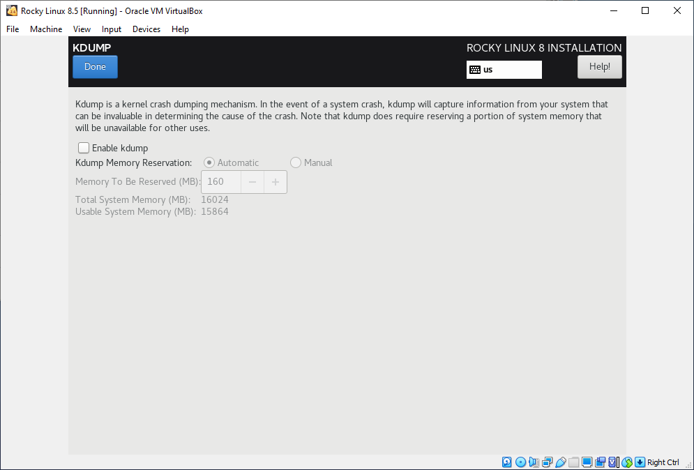

Installing Operating Systems From Scratch
Scrivener Export - Reformatting Needed!
This article is an export of a Scrivener document. It will definitely need at least some reformatting to work in Obsidian and MkDocs. Delete this note once the article's formatting has been fixed to some extent.
Installing Windows 10 Build 21H2¶
Installing Windows 10 Build 21H2
This part of the guide is here to help if you have an emergency on one of your computer systems and fixing the issue requires you to fully reload the operating system. This process can be scary the first few times you do it, especially if one has never performed a fresh install of Windows 10 on a visual workstation or render node system.
Windows Setup¶
Windows Setup
Language to install: "English (United Kingdom)"
Change the Keyboard from "United Kingdom" over to "US".
Then click the "Next" button to continue.
Windows Setup
Click on the "Install Now" button to continue.
Activate Windows¶
Activate Windows
Click on the "[x] I don't have a product key" checkbox.
Select the operating system you want to install¶
Select the operating system you want to install
Choose "Windows 10 Home" from the list.
Click the "Next" button.

Applicable notices and license terms¶
Applicable notices and license terms
Enable the "[x] I accept the license terms" checkbox. Then click the "Next" button.
What type of installation do you want?¶
What type of installation do you want?
Choose the "Custom install" option to continue.
Where do you want to install Windows?¶
Where do you want to install Windows?
Click on the "*New" button that has the orange star icon next to it.

A numerical entry field will appear with an auto- sized value pre-filled in MB (megabytes). Press the "Apply" button to accept this value.
Then click the "Next" button to continue.
Windows Setup¶
Windows Setup
A dialog with the message text "To ensure that all Windows features work correctly, Windows might create additional partitions for system files." will appear.
Click the "OK" button to continue.
Where do you want to install Windows?¶
Where do you want to install Windows?
Click the "Next" button to continue.
Installing Windows
An installation progress window will appear. At a certain point the installer will restart the computer and transition from running off the Windows installation media ISO image, onto the new Windows install on the local hard disk.
Access the VirtualBox Menus for the "Win10" VM¶
Access the VirtualBox Menus for the "Win10" VM
Uncheck the "Devices > Network > [ ] Connect Network Adapter" option.
By unchecking the checkbox control, VirtualBox will disable the network connection during the Windows install.
Let's start with region. Is this correct?¶
Let's start with region. Is this correct?
Select the "United Kingdom" option.
Is this the right keyboard layout?¶
Is this the right keyboard layout?
Select the "US" entry from the list.
Do you want to add a second keyboard layout?¶
Do you want to add a second keyboard layout?
Click the "Add layout" button.
Which keyboard layout would you like to use?¶
Which keyboard layout would you like to use?
Select the "US" entry from the list.
Let's connect you to a network¶
Let's connect you to a network
Click on the text "I don't have internet" to continue the Win10 install with no internet access connected.
There is more to discover when you connect to the Internet¶
There is more to discover when you connect to the Internet
Click on the text "Continue with limited setup"
Who's going to use this PC?¶
Who's going to use this PC?
Name: "vfx"
Click the "Next" button.
Create a really memorable password¶
Create a really memorable password
Password: "\<Write In Something>"
Click the "Next" button.
Confirm your password¶
Confirm your password
A textual message will appear: "Type your password one last time".
Password: "\<Write In Something>"
Click the "Next" button.
Create security questions for this account¶
Create security questions for this account
A textual message will appear of "Just in case you forget your password, choose 3 security questions and make sure your answers are unforgettable".
Your answer: "\<Write In Something>"
Click the "Next" button.
Let Microsoft and apps use your location¶
Let Microsoft and apps use your location
Select the "No" option.
Click the "Accept" button.
Find my device¶
Find my device
Select the "No" option.
Then click the "Accept" button.
Send diagnostic data to Microsoft¶
Send diagnostic data to Microsoft
Select the "Send Required diagnostic data" entry.
Improve inking & typing¶
Improve inking & typing
Select the "No" option.
Get tailored experiences with diagnostic data¶
Get tailored experiences with diagnostic data
Select the "No" option.
Let apps use advertising ID¶
Let apps use advertising ID
Select the "No" option.
Let Cortana help you get things done¶
Let Cortana help you get things done
Click the "Not now" button.
Windows Setup Progress Messages¶
Windows Setup Progress Messages
Several Windows progress dialog messages will appear over the next few minutes. No user input is required at this point for the installation to complete.
Windows Setup Complete¶
Windows Setup Complete
When the Windows desktop pattern shows up, with the "Microsoft Edge" and "Recycle Bin" icons present, you have completed the Windows 10 installation process.
Quite a few background tasks will run at this point, such as the Windows Update mechanism which will download quite a few GBs of extra files. Over the course of the next few system reboots you do, a range of hardware drivers will get added for the accessories built-into your current laptop, workstation, or server.
Windows Desktop Settings¶
Windows Desktop Settings
In the Windows explorer folder browsing view, expand the ribbon toolbar using the fold-down disclosure triangle at the top right corner of the window.
Switch the ribbon over to the "View" Tab. Then enable the "[x] File name extensions" checkbox. Also enable the "[x] Hidden Items" checkbox, too.
Windows Group Policy Editor¶
Windows Group Policy Editor
If you are running a copy of Windows 10 Pro or Enterprise you have the option to control the Windows OS update cycle. This does not appear to be a feature available in Windows 10 Home.
Option A: Click on the Start menu icon. In the search field type in "Group Policy". Click on the search result entry for the "Edit Group Policy" entry to launch the utility.
Option B: Alternatively, open a command prompt with the "Run as administrator" mode. Type in "gpedit.msc" to launch the Edit Group Policy utility.
Group Policy | Reduce Notification Area Message Verbosity¶
Group Policy | Reduce Notification Area Message Verbosity
To reduce the frequency of the firewall notification messages, it is possible to edit the group policy setting for "Disable Security and Maintenance Notifications".
Group Policy | Control Windows Update Scheduling¶
Group Policy | Control Windows Update Scheduling
Using the panel on the left side of the "Local Group Policy Editor" window, navigate to the Windows Update folder using the path:
Computer Configuration > Administrative Templates > Windows Components > Windows Update
Read through the list of settings you can edit until you find a "Configure Automatic Updates" policy. Double-click on the "Configure Automatic Updates" entry. In the dialog that appears, change the setting to "(x) Disabled" to turn off the automatic update feature permanently. To close the window, click on the "Apply" button, followed by the "OK" button to save changes.
Once these changes are saved to disk, your system will no longer download and apply Windows updates automatically, and you are then able to manually check for updates from the Settings. If you want to check the updates manually, then open the Settings app and go in the Update & Security option, then Windows Update.
Install Office 365 on Windows¶
Install Office 365 on Windows
When setting up a new workstation using an air gapped process, it works well to install "Microsoft Office 365 Home Personal Edition" using an offline installer file that is downloaded in advance.
Microsoft Office Offline Installer docs:
Windows Start Menu Based Startup Folders¶
Windows Start Menu Based Startup Folders
A startup folder based approach is handy if you need to launch a program or command-line script when Windows starts. This is a viable option you might consider using in cases where a system service is not possible such as for tasks that require GPU based hardware acceleration.
The two most often used Windows startup folder locations are:
C:\ProgramData\Microsoft\Windows\Start Menu\Programs\Startup\
C:\Users\vfx\AppData\Roaming\Microsoft\Windows\Start Menu\Programs\Startup\
Install Rocky Linux 8.5 on a Bare Metal System¶
Install Rocky Linux 8.5 on a Bare Metal System
This part of the guide is here to help if you have an emergency on one of your computer systems and fixing the issue requires you to fully reload the operating system. This process can be scary the first few times you do it, especially if one has never performed a fresh install of Rocky Linux on a visual workstation or render node system.
In your BIOS settings, make sure USB based media is bootable. The USB boot media needs to be listed at the top of the "Boot Priority" dialog, in advance of the internal hard disk in the list. This allows the computer to start up using the external USB boot media as the primary operating system during the install process.
Rocky Linux 8 Boot Menu¶
Rocky Linux 8 Boot Menu
Select the "Install Rocky Linux 8" menu item. Then press the "Enter" key on the keyboard to continue.
Welcome to Rocky Linux 8¶
Welcome to Rocky Linux 8
What language would you like to use during the installation process?
Select the "English > English (United States)" language option.
Click the "Continue" button to proceed to the next screen.
Installation Summary¶
Installation Summary
The installation summary dialog lets you fully customize the Rocky Linux 8 OS installation parameters.
Note: There is a certain order-of-operations logic needed, where you have to define the network properties in advance, if you want to use any internet connected features in the other parts of the installer.
System¶
System
KDUMP
Rocky Linux has a diagnostics mode called "KDUMP" that can save diagnostic logging information when a crash occurs. For most normal use cases in the VFX and animation sector, like setting up a new render node or a workstation, this KDUMP feature is not required.
Let's disable KDUMP and get 160 MB of extra RAM back in the process. Uncheck the "[ ] Enable kdump" checkbox near the top left of this dialog window. Then press the "Done" button to return to the primary "Installation Summary" installer screen.

Network & Host Name¶
Network & Host Name
The "Network & Host Name" dialog allows you to bring network interfaces like WiFi connections or Ethernet connections online. This means you can use Rocky Linux Minimal installation media to get the install going, and pull in the remaining packages you might need over the internet from a repository to complete the set up of a visual workstation.
Select your network interface at the top left part of the dialog. In my case I am using an Etherent connection called "Ethernet (enp0s3)". On the far right side of the dialog is an ON/OFF control. To bring the network interface online, toggle the control to the ON state.
The computer's name is defined with the "Host Name:" field at the bottom left corner of a dialog. I will give this system a host name of "R1" to represent render node 1 in my mini on-premise render cluster. Click the "Apply" button after entering a custom host name.
Let's further customize the remaining network settings. Click the "Configure" button.
Network & Host Name > Configure > Ethernet > MTU > 9000 (This setting will turn on Jumbo packets)
Network & Host Name > Configure > General > [x] Connect automatically with priority > 0
Security Policy > Apply Security Policy > OFF
Installation Destination > (Skip customizing it until later on in this guide.)
Software¶
Software
Software Selection
Base Environment
(x) Server
Additional Software for Selected Environment¶
Additional Software for Selected Environment
- File and Storage Server
- GNOME
- Hardware Monitoring Utilities
- Network File System Client
- Network Servers
- Performance Tools
- Windows File Server
- Development Tools
- Graphical Administration Tools
- Headless Management
- Legacy UNIX Compatibility
- Scientific Support
- System Tools
Localization¶
Localization
Keyboard
"English US"
Language Support
English (United States)
Date & Time
Americas/Halifax Timezone
24-Hour Clock
Network Time
Set the control to "ON"
Note: You have to enable the network settings FIRST in order for the "Date & Time > Network Time" option to be available to be turned on at all.
User Settings¶
User Settings
Root Password
Type in a secure password, that is possible to be remembered, and possible to be typed in correctly without error, by hand, many times over via an SSH network session.
If the password is deemed too short by the Root Password page, it is possible to click the "Done" button twice to force that shorter password to be retained and used.
User Creation¶
User Creation
Enable the "[x] Make this user administrator" checkbox.
Enable the [x] Require a password to use this account" checkbox.
Full name:¶
Full name:
vfx
User name:
vfx
For better pipeline and shell scripting compatibility, choose a user name with less than 8 characters, no accented characters, no unicode characters, and pure ASCII alphanumeric digits, and no spaces. Going with lower case letters here isn't a bad thing if you are manually deploying a lot of tools and want faster, easier typing.
The user name you select here becomes your home folder location of:
/home/vfx/
Installation Destination¶
Installation Destination
Local Standard Disks
Click on a drive to add a checkmark to indicate the install disk you would like to overwrite.
Storage Configuration¶
Storage Configuration
Select the "(x) Custom" option
Installation Options Warning Dialog¶
Installation Options Warning Dialog
Your current Rocky Linux software selection requires (GiB) of available space, including (GiB) for software and (GiB) for swap space.
Click the (Reclaim Space) Button.
Reclaim Disk Space¶
Reclaim Disk Space
One has to be very careful when you go to remove pre-existing disk partitions on your destination drive where you are installing Rocky Linux. If you have several additional disks in the system, you need to check the drive make/model and disk capacity to ensure you are targeting the correct drive on the install.
The "sdb" like values hop around a bit when you plug in more internal and external drives so stay very vigilant not to destroy important disks like backup drives at this time.
Hard Drive Layout¶
Hard Drive Layout
EFI System Partition (EFI System Partition)
/boot/efi (EFI System Partition) 512 MiB
/ (ext4)
Manual Partitioning¶
Manual Partitioning
New mount points will use the following partitioning scheme:
Standard Partitioning
Note: When you look through the hard drives shown in the "Unknown" section of the dialog, keep an eye out for any volumes that have an "ISO 9660" file system.
Seeing a USB drive listed as "ISO 9660" at this stage typically indicates this volume is the installation media you booted from that was created from an original ISO disk image. Don't delete this drive, as you are likely running the current Rocky Linux OS installer off that disk/memory card/USB thumbdrive right now!!!
Create a Disk Partition "One"¶
Create a Disk Partition "One"
Tip: Look at the top right of the manual partitioning window at the entry labelled "Device(s)" to see the hardware brand and drive model information for the partition you are interacting with.
This will be a value like "ATA OWC Mercury Extr..." for a render node with an SSD drive. Other drives will be listed here for laptops, desktops, or server systems.
To add a new partition to the boot volume click the bottom left of the manual portioning window's little "+" shaped button icon.
Add a new mount point dialog¶
Add a new mount point dialog
Desired Capacity:
512 MiB
Mount Point:
/boot/efi
Click the "Add a mount point" button to close the window and apply the settings. This will create a drive partition with an "EFI System Partition" file system.
Create a Disk Partition "Two"¶
Create a Disk Partition "Two"
Click the bottom left of the manual portioning window's little "+" shaped button icon, to add a new partition to the boot volume.
Add a new mount point dialog¶
Add a new mount point dialog
Mount Point:
/
Device Type:
Standard Partition
Desired Capacity:
Leave this input field blank to use all of the remaining space on the hard drive for file storage.
Click the "Add a mount point" button to close the window and apply the settings.
Once the "Add a new mount point" dialog closes and you are back at the "Manual Partitioning" window, you need to click on the "/" based drive partition at the top left part of the window.
Change the "File System" parameter from the default value of "xfs" over to the more flexible option of "ext4". An ext4 based file system can be resized later on once the Linux OS is installed using a partition editing tool like "gparted".
Note: If your hard disk was prepared with the default Linux setting using an "xfs" partition, it can make the relatively basic task of resizing an internal disk partition smaller, a real challenge later on.
Summary of changes¶
Summary of changes
Click the "Accept Changes" button.
Installation Summary¶
Installation Summary
Click the "Begin Installation" button.
When the install completes, press the "Reboot" button. Remove the install media when the monitor goes black.
Then open the BIOS by pressing "delete" on your keyboard as soon as the system restarts.
Select the boot drive in the BIOS that holds the Rocky Linux OS install. Press F10 to save the settings and exit BIOS.
Rocky Linux Deployment Essentials¶
Rocky Linux Deployment Essentials
# Add Gnome and enable a graphical desktop.
sudo dnf groupinstall "Workstation"
sudo systemctl set-default graphical
# Restart the system to autoload Gnome next.
sudo reboot
# Turn on auto-login for the rackmounted servers
# This can be done only if the systems are in a secure access location, and you need startup items such as a graphical XPU GPU/CPU based userland application to run. Not all GPU tools can be launched as system services in 2022.
Firefox¶
Firefox
In Firefox, right-click on the bookmark bar area at the top of the window. In the contextual popup menu, select the "[x] Menu Bar" item.
A menu bar should now be visible at the top of the Firefox window.
Add 3rd Party Repositories¶
Add 3rd Party Repositories
# Add the EPEL software repository.
sudo dnf install epel-release
# Import the signing key for the EPEL repository.
sudo rpm --import https://www.elrepo.org/RPM-GPG-KEY-elrepo.org
# Add the EL Repo software repository.
sudo dnf install https://www.elrepo.org/elrepo-release-8.el8.elrepo.noarch.rpm
# Add the kernel headers
sudo dnf --enablerepo=elrepo-kernel install kernel-ml kernel-ml-devel kernel-ml-headers -y --allowerasing
# Upgrade the Linux kernel from 4.x to 5.x
# sudo dnf upgrade --refresh -y
# Add the RPM Fusion repository free releases
sudo dnf install --nogpgcheck https://mirrors.rpmfusion.org/free/el/rpmfusion-free-release-8.noarch.rpm -y
# Add the RPM Fusion repository non-free releases
sudo dnf install --nogpgcheck https://mirrors.rpmfusion.org/nonfree/el/rpmfusion-nonfree-release-8.noarch.rpm -y
Add Developer Tools¶
Add Developer Tools
# Add C/C++ compiler tools
sudo dnf install gcc -y
# Add more compiler resources
sudo dnf groupinstall "Development Tools" -y
Install NVIDIA Drivers on Linux¶
Install NVIDIA Drivers on Linux
NVIDIA Driver Install References
https://www.linuxcapable.com/how-to-install-or-upgrade-nvidia-drivers-on-rocky-linux-8/
Uninstall old NVIDIA drivers¶
Uninstall old NVIDIA drivers
sudo dnf remove nvidia-driver
sudo dnf module reset nvidia-driver
Install NVIDIA Drivers¶
Install NVIDIA Drivers
# Use the NVIDIA repo to source the GTX GPU drivers
sudo dnf update -y
sudo dnf config-manager --add-repo <https://developer.download.nvidia.com/compute/cuda/repos/rhel8/x86_64/cuda-rhel8.repo> -y
sudo dnf install kernel-devel-$(uname -r) kernel-headers-$(uname -r) --allowerasing -y
sudo dnf install nvidia-driver nvidia-settings -y
sudo dnf install cuda-driver -y
# Restart the workstation
sudo reboot now
Troubleshooting Linux GPU Driver Issues¶
Troubleshooting Linux GPU Driver Issues
Question: Did the GPU setup get fully borked after the NVIDIA GPU Driver install?
If the NVIDIA driver install has issues, one can change the "Run Level" to a text console input mode to help with the recovery process using:
-
To switch the display over to a "Run Level 5" textual console view press the "Control + Alt + F5" keyboard hotkey.
-
To switch the display over to a "Run Level 6" graphical GNOME view press the "Control + Alt + F6" keyboard hotkey.
# Switch from a terminal session back to a gnome desktop session startx
NVIDIA Preferences¶
NVIDIA Preferences
After the GPU Drivers are installed you get access to "nvidia-smi" and "nvidia-settings" as command-line tools:
# Check the GPU hardware stats from the terminal
sudo nvidia-smi
# Adjust the proprietary NVIDIA GPU driver and display properties
sudo nvidia-settings
X11 / XORG Graphics Preferences¶
X11 / XORG Graphics Preferences
When running the "nvidia-settings" program, you should save the edited xorg settings back to disk at the following file path: "/etc/X11/xorg.conf"
# Create a backup of the current xorg file
sudo cp /etc/X11/xorg.conf /etc/X11/xorg.conf.bak
# Verify the XORG preference file was backed up successfully
sudo ls -laX /etc/X11/xorg*
Installing Linux Software¶
Installing Linux Software
Make sure to check out the site "pkgs.org" when hunting for the right package for your current Linux distro. This site is a super efficient time saver when you need to locate the exact version matched with the RedHat .rpm package equivalent to a Ubuntu/Debian .deb package that might be listed in the documentation for a tool you need to install.
# Add disk utilities
sudo dnf install gparted sshpass -y
sudo dnf install sysbench hardinfo -y
# Add NFS storage support
sudo dnf install nfs-utils -y
# Add exfat and ntfs filesystem support
sudo dnf install exfatprogs -y
sudo dnf install exfat-utils -y
sudo dnf install fuse-exfat -y
sudo dnf install ntfs-3g -y
# Add media tools like vlc, ffmpeg, Imagemagick, and hugin
sudo dnf install vlc -y
sudo dnf install ffmpeg --skip-broken --allowerasing -y
sudo dnf install ImageMagick -y
# Add network file transfer clients
sudo dnf install filezilla -y
# Add the thunderbird email client
sudo dnf install thunderbird -y
# Add sshpass which is a Bash scripting friendly remote access tool
sudo dnf install sshpass -y
# Add dialog curl wget unzip zip unrar nano for shell scripting
# Add LuaJIT for scripting
sudo dnf install luajit -y
# Add xclip for clipboard copy/paste
# Add virtual environment tools:
# pip, py virtual environment, anaconda, rez
# Add nodejs, electron, shelljs, and moment
# Add OpenCV, GluonCV, OpenMMLab, MediaPipe, PyTorch, OpenColorIO, OpenImageIO, and Jupyter Notebook
# Add the NVIDIA GPU control software "Green With Envy" for memory timing, core clock speed, and fan control.
# Add the Intel OpenCL ICD Driver.
Rocky Linux Control Panels¶
Rocky Linux Control Panels
- Users > Auto Login
- Sound output
- Unlink the Super/meta key so it doesn't affect Gnome.
- Customize the desktop pattern.
- Change the windows background color from a bright white shade to a neutral grey or dark theme
Privacy Settings | Screen Lock¶
Privacy Settings | Screen Lock
If you are in a shared office like working environment it can be useful to have the "Privacy" setting for "Screen Lock" enabled.
You can fully customize the Screen Lock features timer value using the "Lock screen after blank for X minutes" control.
Screen Lock OFF
It's possible to select a very permissive value of Screen Lock "OFF" which could possibly be of use in a work-from-home based "home office" environment if you are doing XPU based GPU rendering and have physical access security for the workstations or render nodes.
Screen Lock ON
If you are in a co-working space or traditional VFX Studio or a Design Boutique like shared office environment, you might go for a Screen Lock value of somewhere between 5 minutes to 30 minutes.
Details > Users Settings | Automatic Login¶
Details > Users Settings | Automatic Login
If your XPU based render nodes are running in a locked "limited physical access" secured location, or a home-office environment, you might find some workflow benefits from enabling "Automatic Login".
This is relevant if some of your GPU rendering and image-based-modeling tools don't work particularly well when launched via a headless system service approach.
Needless to say, if you are in a large office-like environment with many people present, this is not a viable approach to even think about...
Once again, if your computer gear is in a limited access location then you might consider the following approach as possibly relevant to your pipeline needs:
Open the Rocky Linux "Settings > Details > Users" view.
Then unlock the panel and turn on "Automatic Login".
Linux Networking¶
Linux Networking
# Disable SE Linux
# Open the /etc/selinux/config file and set the SELINUX mode to disabled.
sudo nano /etc/selinux/config
# Disable the firewall
sudo systemctl disable firewalld
sudo systemctl stop firewalld
sudo systemctl status firewalld
# Needs some work to update from Centos v7.9 to Rocky Linux v8.5
{
sudo systemctl enable rpcbind
sudo systemctl enable nfs-server
sudo systemctl enable nfs-lock
sudo systemctl enable nfs-idmap
sudo systemctl start rpcbind
sudo systemctl start nfs-server
sudo systemctl start nfs-lock
sudo systemctl start nfs-idmap
sudo systemctl restart nfs-server
}
Gedit Text Editor¶
Gedit Text Editor
- Gedit Preferences > View:
- Display line numbers
- Gedit Preferences > View > Highlighting
- Highlight current line
- Highlight matching brackets
- Gedit Preferences > Editor > Tap Stops > 2
- Gedit Preferences > Fonts & Colors
- Oblivion
- use the system fixed width font (Monospace 11)
- Editor font: Monospace Regular 18
- Gedit Preferences > Plugins
- External Tools
- Python Console
- Quick Open
- Snippets
- Sort
Linux Terminal App¶
Linux Terminal App
Terminal > preferences > Colors > Text and Background Color
Built-in schemes:
Green on black
"Top" Process Viewer CLI App¶
"Top" Process Viewer CLI App
Set up the Top "IRIX" mode customizations
Launch top from the command-line using:
top
- Press "z" for color
- Press "E" for memory scale to GB
- Press "e" several times to show memory of tasks as gb.
- Press "i" for Irix mode - shorter list of active tasks - not used this time...
- Press "d" 0.5 for faster updates
- Press "t" 3 times to hide the top line tasks summary and show a progress bar
- Press "f" to adjust sort order and columns
- Sort by %CPU = select it by pressing right arrow and then press the s key on the keyboard
%CPU
%MEM
RES
PID
USER
COMMAND
- Unselect items with spacebar for any remaining category
- Press "q" to exit column order editing
- Press "Shift + W" to write the prefs to disk
Fix Folder Permissions:¶
Fix Folder Permissions:
If you are using the Rocky Linux system as a single-user visual workstation the following two commands can help fix headaches while you finish installing your core tools. Once the software you use day-to-day is configured you can then roll the permissions back to "755" or whatever value you feel is appropriate.
sudo chmod -R 777 $HOME
sudo chmod -R 777 /opt/
Linux User Account Tweaks¶
Linux User Account Tweaks
# Login via a localhost based SSH shell connection as the user "root"
ssh root@localhost
# Login as the user "root"
sudo -u root -i
# Login as the user "vfx"
sudo -u vfx -i
# list the current folder path aka "put working directory":
pwd
# navigate to the "root" user's home folder
cd /root/
# Navigate to the "vfx" user's home folder
cd /home/vfx/
# Navigate to the current user's home folder (inside /home/) using the $HOME environment variable
cd $HOME/
# list the current folder contents
ls
# list folder contents
ls
# Install a specific RPM package (in this case named "SomePackage.rpm") that is found in the current folder
sudo rpm -Uvh SomePackage.rpm
# Install all of the RPM file files in the current folder
sudo rpm -Uvh *.rpm
# Alternative way to Install all of the RPM file files in the current folder
sudo rpm -i *.rpm
# Run "Visudo" to edit the Sudoers list so you can add new users to the list of admin accounts capable of running "sudo" in the terminal
sudo visudo
# Edit the Sudoer's list
# You need to start by pressing the "i" key to enable the VIM "insert mode" in the text editor to be able to add new lines of text to the document. Navigation is done by the up/down cursor keys. Add the following text, near the bottom part of the sudoers text file, to add a user account named "vfx" to the sudoers list:
vfx ALL = (ALL) ALL
# The Visudo utility is VIM text editor based, so you will need to use some funky keypresses to save and exit visudo...
# Press the "Esc (escape)" hotkey. Then type in ":wq" to write the changes to disk, and quit the active Visudo (VIM) editing session. Then press the "Enter" hotkey to return to the Terminal.
Install CentOS Linux 7.9 on a Bare Metal System¶
Install CentOS Linux 7.9 on a Bare Metal System
This part of the guide is here to help if you have an emergency on one of your computer systems and fixing the issue requires you to fully reload the operating system. This process can be scary the first few times you do it, especially if one has never performed a fresh install of CentOS Linux on a visual workstation or render node system.
In your BIOS settings, make sure USB based media is bootable. The USB boot media needs to be listed at the top of the "Boot Priority" dialog, in advance of the internal hard disk in the list. This allows the computer to start up using the external USB boot media as the primary operating system during the install process.
Hard Drive Layout¶
Hard Drive Layout
EFI System Partition (EFI System Partition)
/boot/efi (EFI System Partition) 512 MiB
/ (ext4)
Manual Partitioning¶
Manual Partitioning
(x) I will configure partitioning
Click on the hard disk icon
Clicking on the (done) button will show partitioning options
Switch from "LVM" to the "Standard Partition" Type
(Click here to create partitions)
Remove the "Home" and "Swap" partitions with the "-" minus icon.
File System: EXT4
Click the "Done" button.
In the Summary of Changes window click "Accept Changes"
User Account Creation¶
User Account Creation
During the CentOS install process you are given the option to create an admin user account for the Linux system.
Add User:
vfx
Enable the checkbox for the control labelled:
"[x] make this user an admin"
Enable Automatic Login
sudo nano /etc/gdm/custom.conf
Overwrite the custom.conf file contents with:
# GDM configuration storage
[daemon]
AutomaticLogin=linuxconfig
AutomaticLoginEnable=True
[security]
[xdmcp]
[chooser]
[debug]
# Uncomment the line below to turn on debugging
#Enable=true
Add 3rd Party Repositories¶
Add 3rd Party Repositories
# Update CentOS:
sudo yum update
# Add the EPEL repository:
sudo yum install epel-release
sudo yum update
# Add the Nux repository:
sudo rpm -v --import http://li.nux.ro/download/nux/RPM-GPG-KEY-nux.ro
sudo rpm -Uvh http://li.nux.ro/download/nux/dextop/el7/x86_64/nux-dextop-release-0-5.el7.nux.noarch.rpm
# Add the elrepo repository for Linux hardware drivers:
sudo rpm --import https://www.elrepo.org/RPM-GPG-KEY-elrepo.org
sudo rpm -Uvh http://www.elrepo.org/elrepo-release-7.0-2.el7.elrepo.noarch.rpm
# If you want to be able to read an ExFat formatted USB drive you will need to add:
sudo yum install exfat-utils fuse-exfat
Adjust the Security Settings¶
Adjust the Security Settings
If you are running a render node system inside a LAN you will likely want to adjust the firewall rules and disable SELinux.
# Open the "/etc/selinux/config" file:
sudo nano /etc/selinux/config
# Set the SELINUX mode to disabled by changing the following SELinux line in the config file to read:
SELINUX=disabled
# Disable the firewall:
sudo systemctl disable firewalld
sudo systemctl stop firewalld
sudo systemctl status firewalld
Change the Host Name¶
Change the Host Name
# Change the host name in Centos 7:
sudo gedit /etc/hostname
# You can also update the host name using:
sudo gedit /etc/sysconfig/network
# Look in the text file for the entry:
localhost.localdomain
# Change this line to edit the host name value to something like:
R1
# Print the current host name:
echo The current host name is: uname -n
# Edit the hosts file:
sudo gedit /etc/hosts
127.0.0.1 R1 localhost
::1 R1 localhost localhost.localdomain localhost6 localhost6.localdomain6
Add Developer Tools¶
Add Developer Tools
# Add the GCC compiler
sudo yum install gcc
# The NVIDIA installer requires the GCC compiler tools
sudo yum -y groupinstall "Development Tools"
# NVIDIA installer requires kernel source files
sudo yum install kernel-devel
# Install more libraries to satisfy the NVIDIA installer
sudo yum install pkgconfig libglvnd-devel
# The dkms package package will ensure continuous NVIDIA kernel module compilation and installation in the event of new Linux kernel update.
sudo yum -y install dkms
Install the Cinnamon Window Manager¶
Install the Cinnamon Window Manager
# Install the GTK theme engine Murrine that is used by gedit, and the installers for Maya / V-Ray
sudo yum install gtk-murrine-engine
# Install lshw
sudo yum install lshw
# Install Cinnamon
sudo yum --enablerepo=epel -y install cinnamon*
# Add Cinnamon to your rc file
echo "exec /usr/bin/cinnamon-session" >> ~/.xinitrc
# Start the X Desktop session
startx
To change the active Linux window manager, you need to log out of the current user account session.
On the login window, set Cinnamon as your active window manager by clicking on the "gear wheel" icon and selecting Cinnamon.
Log back into your user account.
Install the NVIDIA Drivers for CentOS Linux¶
Install the NVIDIA Drivers for CentOS Linux
NVIDIA RTX 3090 Linux CentOS Driver webpage:
https://www.nvidia.com/Download/driverResults.aspx/172376/en-us
# Direct Driver Download Link:
cd $HOME
wget https://us.download.nvidia.com/XFree86/Linux-x86_64/460.73.01/NVIDIA-Linux-x86_64-460.73.01.run
# The Nvidia drivers must be installed while the xorg server is stopped. Switch to text mode, or run this via ssh:
systemctl isolate multi-user.target
# Alternatively you can terminate the xserver session which is the hard core route
sudo killall /usr/bin/X
# You can start linux in a text console using the Control + Alt + F2 hotkey after you have logged out of the user session
# Install the drivers (the name of the executable would have to line up with the exact driver version you downloaded)
cd $HOME
sudo sh ./NVIDIA-Linux-x86_64-460.73.01.run
The NVIDIA installer options you want to select are:
DMKS (yes)
The NVIDIA installer asks if you want to install 32 bit libraries (yes)
The NVIDIA installer asks about libglvnd (install and overwrite existing)
The NVIDIA installer asks about auto update X configuration file? (yes)
If you are running the default Nouveau graphics drivers on CentOS when you run the NVIDIA installer, you will likely see a message that says:
ERROR: The Nouveau kernel driver is currently in use by your system. This driver is incompatible with the NVIDIA driver, and must be disabled before proceeding. Please consult the NVIDIA driver README and your Linux distribution's documentation for details on how to correctly disable the Nouveau kernel driver.
# You can then disable nouveau driver by changing the configuration "/etc/default/grub" file. Add the entry "nouveau.modeset=0" to the line starting with GRUB_CMDLINE_LINUX.
sudo nano /etc/default/grub
# Below you can find example of grub configuration file reflecting the previously suggested change:
GRUB_TIMEOUT=5
GRUB_DISTRIBUTOR="$(sed 's, release .*$,,g' /etc/system-release)"
GRUB_DEFAULT=saved
GRUB_DISABLE_SUBMENU=true
GRUB_TERMINAL_OUTPUT="console"
GRUB_CMDLINE_LINUX="rhgb quiet nouveau.modeset=0"
GRUB_DISABLE_RECOVERY="true"
# You can optionally remove the "quiet" entry on "GRUB_CMDLINE_LINUX" to be able to see startup messages for issues like missing drive automounts.
# The GRUB changes ensure that the open-source nouveau graphics driver is disabled the next time you boot your CentOS 7 Linux system. Once ready execute the following command to apply the new GRUB configuration change:
# If you are running a legacy BIOS system:
sudo grub2-mkconfig -o /boot/grub2/grub.cfg
# If you are running an EFI based system:
sudo grub2-mkconfig -o /boot/efi/EFI/centos/grub.cfg
# Reboot your CentOS 7 Linux System.
sudo reboot
# Once the boot is finished confirm that the nouveau open-source graphics driver is no longer in use:
lshw -numeric -C display
# WARNING: you should run this program as super-user.
# *-display UNCLAIMED
# description: VGA compatible controller
# product: GK208B [GeForce GT 710] [10DE:128B]
# vendor: NVIDIA Corporation [10DE]
# physical id: 0
# bus info: pci@0000:01:00.0
# version: a1
# width: 64 bits
# clock: 33MHz
# capabilities: vga_controller bus_master cap_list
# configuration: latency=0
# resources: iomemory:6970-696f iomemory:6970-696f memory:ca000000-caffffff memory:69738000000-6973fffffff memory:69740000000-69741ffffff ioport:3000(size=128) memory:cb000000-cb07ffff
# WARNING: output may be incomplete or inaccurate, you should run this program as super-user.
# Install the Mesa utils package if you want to be able to run the glxgears and glxinfo programs.
sudo yum install mesa-demos.x86_64
# If you would like to have OpenCL v1.2 you will need to add extra repos before you can install the following package
sudo yum install ocl-icd ocl-icd-devel
# To make OpenCL run with programs like Blackmagic Fusion Studio happy, you might need to create this symlink
sudo ln -s /usr/lib64/libOpenCL.so.1 /usr/lib/libOpenCL.so
# Get the OpenGL info (No info is shown when run via ssh with no display)
glxinfo | less
Green With Envy GPU Utility¶
Green With Envy GPU Utility
The "Green with Envy" utility can be used to help control the GPU fan speed, and the memory/core timing. This will ensure you get reliable performance when GPU rendering.
This utility works best in systems with only a single NVIDIA GPU installed. The Cinnamon window manager can sometimes freak out with Linux "kernel panic" system lockups if you have multiple GPUs active.
# Toggle the prefs for all GPUs connected:
sudo nvidia-xconfig --enable-all-gpus
Gnome Settings¶
Gnome Settings
- Disable Screensaver
- Enable Automatic Login
Gnome Hotkeys¶
Gnome Hotkeys
To allow the Autodesk Maya user interface to function correctly, we need to unbind the ALT key in GNOME. This makes it possible to move windows and interact with views in a consistent fashion.
Open the "System Settings > Window > Behaviour" tab. Change the "special key to move and resize windows" setting so it is disabled.
It is handy to add a "Control + Alt + t" shortcut that will display a new terminal window.
Go to "System Settings > keyboard > Shortcuts tab > Custom Shortcuts"
Click on the "+" button.
Name: Terminal Shortcut
Command: gnome-terminal
Now a new shortcut is added with status "disabled". Click on the "disabled" word and assign your shortcut.
I prefer "Control + Alt + t" to run Terminal but you can customize this hotkey binding to meet your needs.
Common Linux Utilities¶
Common Linux Utilities
At this point you could add several extra Linux utilities.
# As a quick tip, this is how you install an RPM package file via the terminal window:
sudo rpm -ivh example.rpm
# Add the nano text editor if it is missing on a minimal install of Centos 7
sudo yum -y install nano
# Add disk management / filesytem packages
sudo yum install -y gparted nfs-utils exfat-utils.x86_64 fuse-exfat.x86_64 kmod-hfsplus.x86_64 kmod-hfs.x86_64
# Add network packages
sudo yum install -y sshpass filezilla tigervnc
# Add general utilities
sudo yum install -y sysbench hardinfo
sudo yum install -y ImageMagick hugin wget vlc mplayer
sudo yum install -y xclip unzip
# Add Redhat compatibility libraries
sudo yum install -y redhat-lsb-core
# Add the X11 utils and fonts
sudo yum -y install libXp xorg-x11-fonts-ISO8859-1-100dpi xorg-x11-fonts-ISO8859-1-75dpi liberation-mono-fonts liberation-fonts-common liberation-sans-fonts liberation-serif-fonts
# Add and enable the NFS server package
sudo yum install -y nfs-utils
sudo systemctl enable rpcbind
sudo systemctl enable nfs-server
sudo systemctl enable nfs-lock
sudo systemctl enable nfs-idmap
sudo systemctl start rpcbind
sudo systemctl start nfs-server
sudo systemctl start nfs-lock
sudo systemctl start nfs-idmap
sudo systemctl restart nfs-server
# Add libraries to support media tools
sudo yum install -y mesa-libGLw libXp gamin audiofile audiofile-devel e2fsprogs-libs tcsh xorg-x11-fonts-ISO8859-1-100dpi xorg-x11-fonts-ISO8859-1-75dpi liberation-mono-fonts liberation-fonts-common liberation-sans-fonts liberation-serif-fonts glx-utils libpng12 mesa-libGLU libXpm libtiff libXcomposite gstreamer1 gstreamer-plugins-base gstreamer1-plugins-base ffmpeg
sudo yum install -y libXScrnSaver
Solve Package Manager Issues on CentOS¶
Solve Package Manager Issues on CentOS
# Clean up after a cancelled yum -y install:
yum-complete-transaction --cleanup-only
# Check the repos folder
sudo nautilus /etc/yum.repos.d/
# Clear the yum cache:
sudo nautilus /var/cache/yum/
# Clear any missing repo files
sudo rpm -Va --nofiles --nodigest
sudo yum -y update --skip-broken